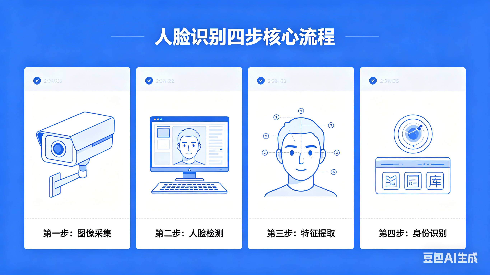
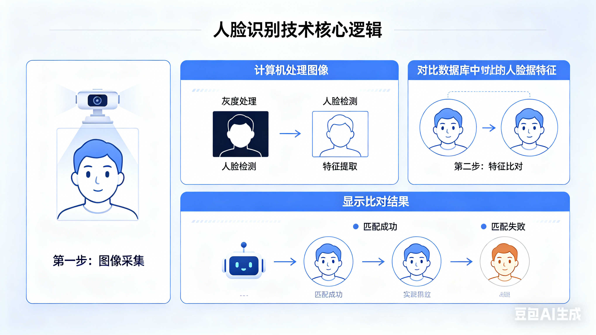

一、微课核心知识点：人脸识别四步核心流程

- 人脸检测：锁定图像中的人脸位置，区分人脸与背景/其他物体，确定识别区域；
- 人脸对齐：通过旋转、缩放、平移将不同角度人脸与标准模板对齐，统一姿态；
- 特征提取：借助深度学习模型（CNN）提取人脸关键特征，生成独一无二的“数字身份证”（特征向量）；
- 人脸匹配：将提取的特征模板与数据库模板对比，通过相似度分数判断是否为同一人。
二、人脸识别技术的核心逻辑

计算机识别人脸的整体逻辑与人类一致：收集信息（摄像头）→ 处理信息（四步流程）→ 输出结果（显示屏/验证成功/失败）。
人类靠眼睛和大脑完成，计算机则通过硬件（摄像头）+ 算法（检测/对齐/提取/匹配）+ 数据库实现。
三、人脸信息保护小技巧
- 不随意在陌生APP/网站录入人脸信息，确认平台正规性；
- 不随便在网上发布高清人脸照片、视频，避免被非法采集；
- 遇到强制“刷脸”要求，可拨打12345或通过中国网信网专栏举报；
- 人脸信息属于敏感生物识别信息，受《刑法》保护，非法采集需承担法律责任。
四、深度解析：人脸检测→人脸匹配 全流程实现原理

人脸识别不是简单的“拍张照对比”，而是计算机一步步精准处理人脸信息的过程，我们用最通俗的语言，拆解每一步的工作原理：
1. 人脸检测：给人脸“画框定位”
这是第一步，计算机的任务是在画面里找到人脸。它会快速扫描整张图片，区分人脸、衣服、背景、物体，一旦识别出五官轮廓，就会自动给人脸画一个矩形框，把人脸区域单独截取出来。不管是正脸、侧脸，还是只露出半张脸，计算机都能精准定位，这是所有操作的基础。
2. 人脸对齐：把人脸“摆正统一”
我们拍照时可能抬头、低头、歪头，计算机无法直接识别不规则的人脸。这一步会自动修正人脸姿态：把歪脸转正、把侧脸调正、把大小不一的人脸缩放成统一尺寸。就像老师要求大家拍证件照必须正视镜头一样，计算机通过算法，让所有人脸都变成标准姿态，方便后续对比。
3. 特征提取：生成人脸“数字身份证”
这是最核心的一步！计算机不会记住你的长相，而是提取**独一无二的人脸特征**：比如两眼间距、鼻梁高度、嘴唇宽度、脸型轮廓等几十上百个关键数据，把这些数据组合成一串数字代码，这就是你的“人脸数字身份证”。哪怕你化妆、戴眼镜，核心特征也不会变，计算机只认这串数字。
4. 人脸匹配：数字代码“精准对比”
计算机把现场生成的数字代码，和数据库里提前存储的代码进行对比，计算相似度。如果相似度超过90%（甚至95%），就判定是同一个人；如果相似度太低，就判定不匹配。整个过程只需要0.1秒，比人类肉眼识别更快、更精准。